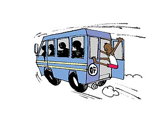
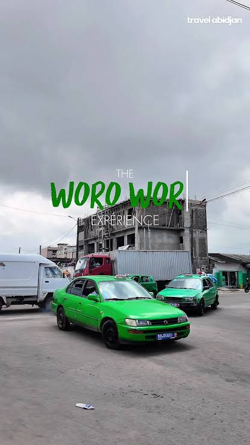
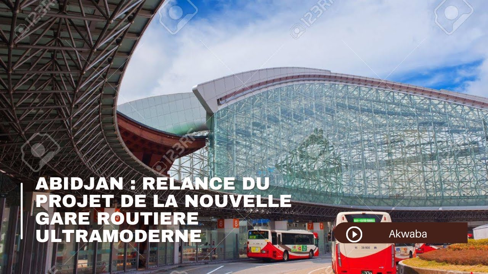
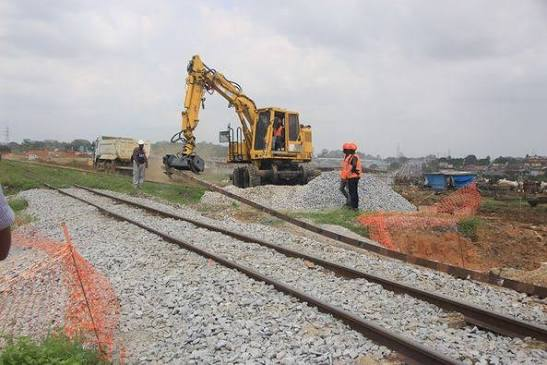

Se déplacer à Abidjan : où sont les arrêts, où vivent les habitants ?
Abidjan est la plus grande ville de Côte d’Ivoire. Ici, on se déplace surtout en gbaka (minibus) et en woro-woro (taxi collectif). Nous avons placé leurs arrêts sur une carte pour voir quelles communes sont bien ou mal desservies.
- Communes étudiées
- 13
- Habitants en 2021
- 6,3 millions
- Arrêts cartographiés
- 4 834
- Lignes de transport
- 490
Notre question
Les habitants des communes les plus éloignées du centre ont-ils moins d’arrêts à proximité que ceux du centre ?
Question proposée, à confirmer ou reformuler par le groupe.
Ouvrir la carteVoir les chiffres
Qui sommes-nous ?
Projet de cartographie réalisé par Marie Aissatou Boye, [Prénom Nom] et [Prénom Nom].
Comment utiliser ce site
- Lisez la page Le territoire pour savoir de quoi on parle.
- Explorez la carte interactive : cliquez sur une commune ou un arrêt.
- Comparez les communes dans Les données.
- Regardez nos propositions et nos sources.
Le territoire étudié
Nous étudions le District autonome d’Abidjan : 13 communes, 6 321 017 habitants en 2021, sur 2 119 km².
Dix communes en ville
Abobo, Adjamé, Attécoubé, Cocody, Koumassi, Marcory, Le Plateau, Port-Bouët, Treichville et Yopougon.
Le Plateau est le quartier des bureaux : 7 186 habitants seulement, mais beaucoup de monde y vient travailler.
Trois communes autour
Anyama, Bingerville et Songon, plus loin du centre et plus récemment urbanisées.
Leurs limites sur la carte sont approximatives.
Deux lieux à part
Pourquoi Brofodoumé n’est pas sur la carte
Le recensement la compte dans le District, mais ce n’est plus une commune depuis mars 2012 : c’est seulement une sous-préfecture. Notre consigne porte sur les communes, donc nous l’avons retirée. Ses 20 357 habitants expliquent l’écart entre le total des 13 communes (6 300 660) et celui du District. Aucun arrêt de nos données n’y est situé.
Grand-Bassam
Cette ville est hors du District, mais elle apparaît dans les données de transport (2 opérateurs, 3 lignes). Nous la gardons comme zone en bordure, sans l’analyser comme une commune du District.
La carte interactive
Zoomez, déplacez la carte et cliquez : une commune affiche sa population, son nombre d’arrêts et ses habitants par arrêt ; un arrêt affiche son nom et sa commune.
La carte ne s’affiche pas ? Ouvrez-la dans un nouvel onglet (Google My Maps).
Ce que montrent les calques
Un calque est une couche de la carte que l’on peut afficher ou cacher avec la case à cocher dans la légende.
- Communes (13) : plus la couleur est foncée, plus la commune est peuplée.
- Arrêts nord et ouest : 1 869 arrêts (Yopougon, Abobo, Anyama, Songon).
- Arrêts est : 1 835 arrêts (Cocody, Bingerville, Le Plateau).
- Arrêts centre et sud : 1 130 arrêts (les six autres communes et les arrêts hors communes).
- Métro ligne 1, en construction : 37 km et 18 stations prévus, livraison annoncée fin 2028. Le tracé déjà dessiné compte 12 stations.
- BRT, en construction : bus rapide sur voie réservée, 20 km prévus, mise en service annoncée en juillet 2027. Le tracé déjà dessiné relie Yao Sehi à Feh Kessé (10 stations).
Les arrêts sont répartis en trois calques car Google My Maps limite chaque fichier importé à 2 000 lignes.
Les données
Population et arrêts de gbaka et de woro-woro pour chacune des 13 communes.
Ce que l’on voit
- Anyama a le moins d’arrêts pour sa population : 3 746 habitants par arrêt.
- Cocody concentre 1 249 arrêts, soit 26 % du total.
- Yopougon et Abobo réunissent 2 911 148 habitants, soit 46 % du District.
- Le Plateau a 96 arrêts pour 7 186 habitants : le ratio n’a pas de sens ici, car on y travaille plus qu’on n’y habite.
- Anyama et Songon semblent peu desservies, mais pas Bingerville, bien pourvue en arrêts.
Tableau complet
Sources : RGPH 2021 et GTFS mdb-2078, calcul du groupe. Résultats indicatifs : voir « Sources et méthode ».
Les lignes de transport
- Lignes au total
- 490
- Lignes de gbaka
- 149
- Lignes de woro-woro
- 341
- Opérateurs
- 23
Les trois plus gros réseaux sont Woro-woro de Cocody (87 lignes), Woro-woro banalisé (85) et Gbaka d’Adjamé (65). Un opérateur désigne ici un regroupement de lignes par commune, pas forcément une entreprise.
Photos
Le quotidien des déplacements à Abidjan en images.




Nos propositions de valorisation du territoire
Cette page sera écrite après l’analyse complète des données.
Ce que nous avons constaté
À compléter.
Ce que nous proposons
À compléter.
Pourquoi cela aiderait
À compléter.
Sources et méthode
Nos sources
- Population par commune : Recensement général de la population et de l’habitat (RGPH) 2021, ministère du Plan et du Développement de Côte d’Ivoire. Résultats globaux (PDF)
- Arrêts, lignes et opérateurs : fichier GTFS de Mobility Database (jeu mdb-2078), qui décrit le réseau en 2023. Voir le jeu de données
- Limites des communes : OpenStreetMap, carte libre faite par des bénévoles.
- Fond de carte du pays : HDX (Humanitarian Data Exchange), jeu cod-ab-civ, découpage de 2018. Voir le jeu
- Tracés du métro et du BRT : OpenStreetMap, extrait de la Côte d’Ivoire téléchargé sur Geofabrik le 27/10/2026.
- Chiffres du métro : Fraternité Matin, 8 juillet 2023
- Chiffres du BRT : Afrik 21
- Statut de Brofodoumé : Wikipédia
Notre méthode
- Nous avons récupéré les données de transport, de population et de limites des communes.
- Dans QGIS, un logiciel de cartographie, nous avons assemblé les limites des 13 communes, puis relié la population de 2021.
- Toujours dans QGIS, nous avons rattaché chacun des 4 834 arrêts à la commune où il se trouve. Nous avons ainsi compté les arrêts et calculé les habitants par arrêt. 4 752 arrêts tombent dans une commune ; 82 sont hors communes.
- Nous avons exporté ces données dans Google My Maps pour créer la carte interactive.
- Nous avons ajouté les tracés du métro et du BRT, en construction, pour comparer le réseau d’aujourd’hui avec celui de demain.
Les limites de notre travail
- Les données de transport datent de 2023 et la population de 2021 : le réseau a pu changer depuis.
- Les limites d’Anyama, Bingerville et Songon sont approximatives : leurs nombres d’arrêts sont à lire avec prudence.
- Seuls les gbaka et les woro-woro sont pris en compte, pas les bus de la SOTRA (société de transport publique) ni les bateaux-bus. Une commune peut sembler mal desservie alors qu’elle a d’autres transports.
- Les tracés du métro et du BRT dans OpenStreetMap ne sont pas encore complets.
- Une zone sans arrêt peut être une zone non relevée, pas forcément une zone sans transport.
Points de vigilance dans les données
- Pour Adjamé, Cocody, Port-Bouët et Anyama, hommes + femmes donne 1 habitant de plus ou de moins que le total. L’écart vient du recensement : nous gardons le total officiel.
- OpenStreetMap donne parfois une population (251 000 pour Cocody), mais elle est ancienne et sans source claire : nous ne l’utilisons pas.
- « Woro-woro d’Attécoubé » est écrit de trois façons dans le fichier : nous l’avons compté une fois, soit 23 opérateurs et non 25.
- Le type de transport est écrit de façons variables dans les noms de lignes : nous l’avons pris dans le nom de l’opérateur, plus fiable.
- 82 arrêts sont hors des 13 communes : 66 sur la route de Grand-Bassam et 16 entre Yopougon et Songon.
- Toutes les lignes sont de type « bus routier » : il n’y a ni bus SOTRA ni bateaux-bus.
Petit glossaire
Ouvrir les définitions
- Gbaka
- Minibus privé de transport collectif, surtout pour les longs trajets entre communes, souvent depuis de grandes gares comme Adjamé.
- Woro-woro
- Taxi collectif : plusieurs clients sur le même trajet, chacun paie sa place. La plupart circulent à l’intérieur d’une commune.
- Woro-woro banalisé
- Woro-woro rattaché à aucune commune, qui relie plusieurs communes. Dans nos données, 85 lignes.
- GTFS (General Transit Feed Specification)
- Format ouvert pour décrire un réseau de transport : un dossier de tableaux en texte simple (arrêts, lignes, opérateurs, horaires).
- OpenStreetMap (OSM)
- Carte du monde libre, construite par des volontaires, un peu comme Wikipédia.
- Overpass Turbo
- Site qui permet de télécharger une partie précise des données d’OpenStreetMap.
- KML
- Format de fichier de données géographiques, lu par Google My Maps et Google Earth.
- RGPH (Recensement général de la population et de l’habitat)
- Recensement de la Côte d’Ivoire. Le dernier date de 2021.
- Jointure
- Relier deux tableaux grâce à une colonne commune, ici le nom de la commune.
- Jointure spatiale
- Même idée, avec la position : chaque arrêt est rattaché à la commune où il se trouve.
- BRT (Bus Rapid Transit)
- Bus rapide circulant sur une voie réservée.